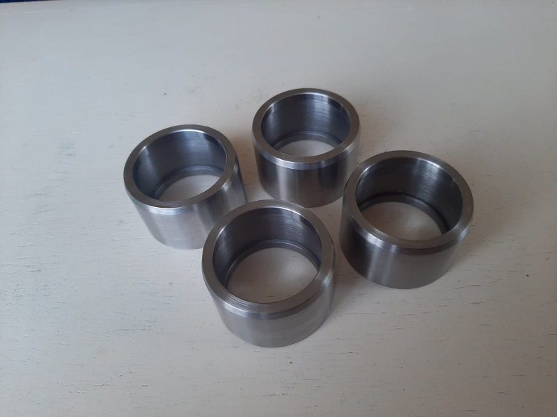
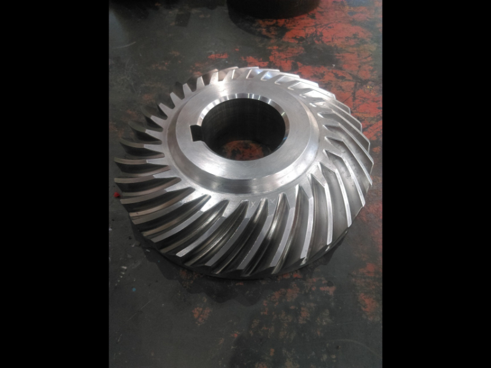
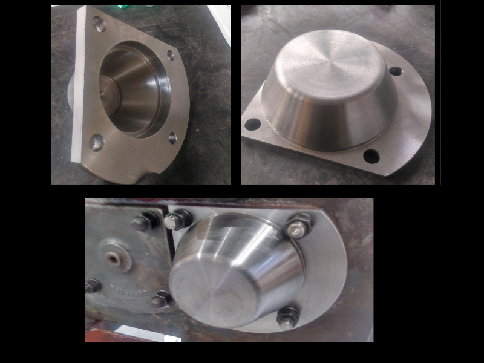
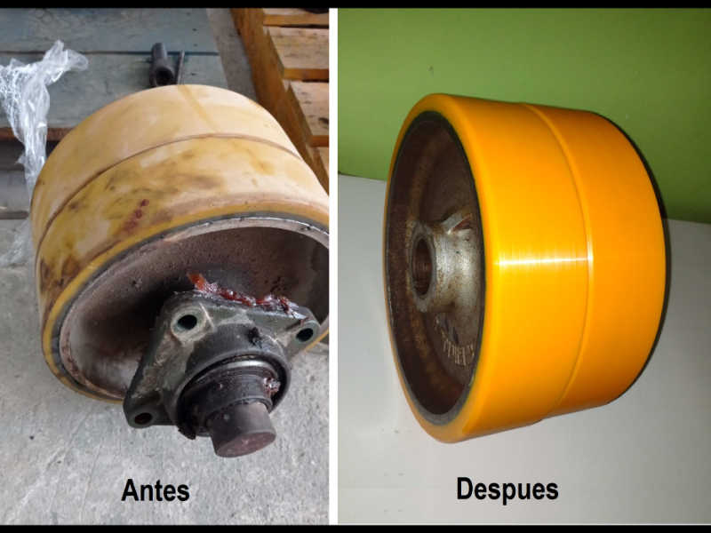

01
Mecanizado de precisión
Torneado y fresado de piezas según plano o muestra, con tolerancias ajustadas y acabado superficial controlado. Trabajamos piezas unitarias y series cortas.
Trabajamos sobre plano, muestra o pieza desgastada. Cada trabajo se evalúa técnicamente antes de cotizar.
Líneas de trabajo
01
Torneado y fresado de piezas según plano o muestra, con tolerancias ajustadas y acabado superficial controlado. Trabajamos piezas unitarias y series cortas.

02
Fabricación a medida de componentes para equipos y líneas de producción del sector industrial, partiendo del plano del cliente o del levantamiento de la pieza original.

03
Reposición de partes y repuestos de maquinaria minera, orientada a reducir los tiempos de parada en operación cuando el repuesto original no está disponible de inmediato.

04
Reconstrucción y fabricación de partes de máquinas a partir de la pieza original desgastada, recuperando medidas y ajustes de trabajo.

05
Recuperamos ruedas y rodillos desgastados mediante revestimiento con poliuretano, y fabricamos bocinas, sellos, anillos y placas a medida en este material.
Cómo trabajamos
Paso 01
Nos envías el plano, la muestra o la pieza a reponer, junto con el material requerido.
Paso 02
Nuestro equipo revisa la factibilidad, define el proceso y estima el plazo de entrega.
Paso 03
Recibes la propuesta con alcance, material, plazo y precio antes de iniciar el trabajo.
Paso 04
Fabricamos la pieza, verificamos medidas y coordinamos la entrega.
Nuestro equipo técnico se pondrá de inmediato a estudiar tu solicitud.